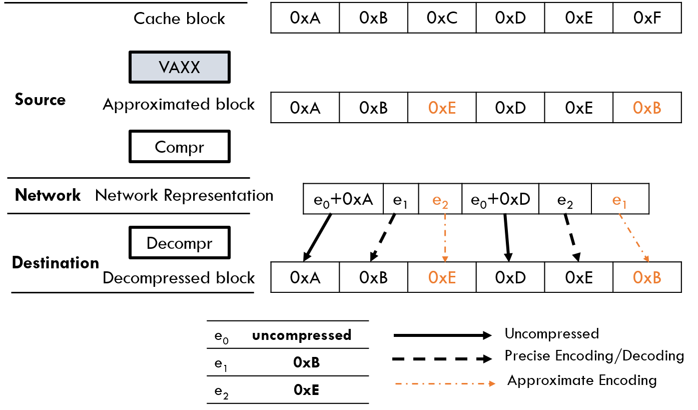
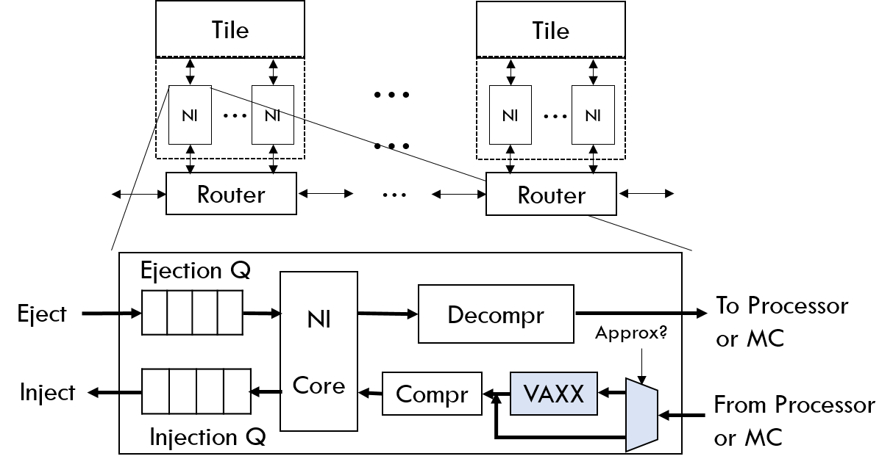
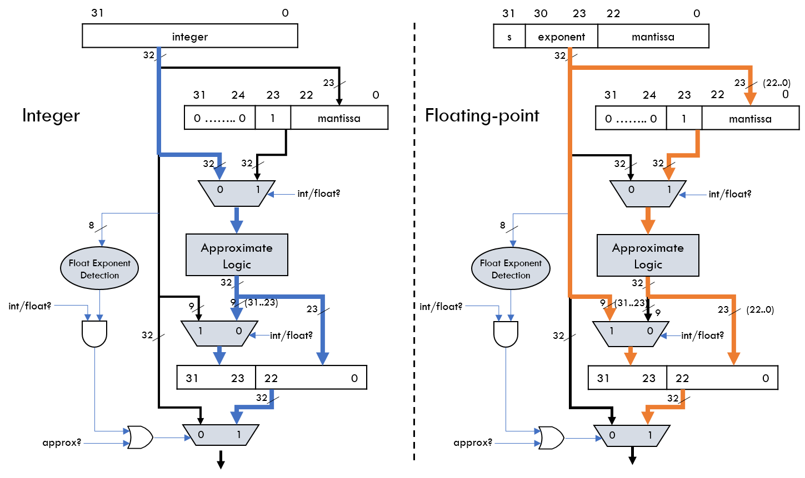
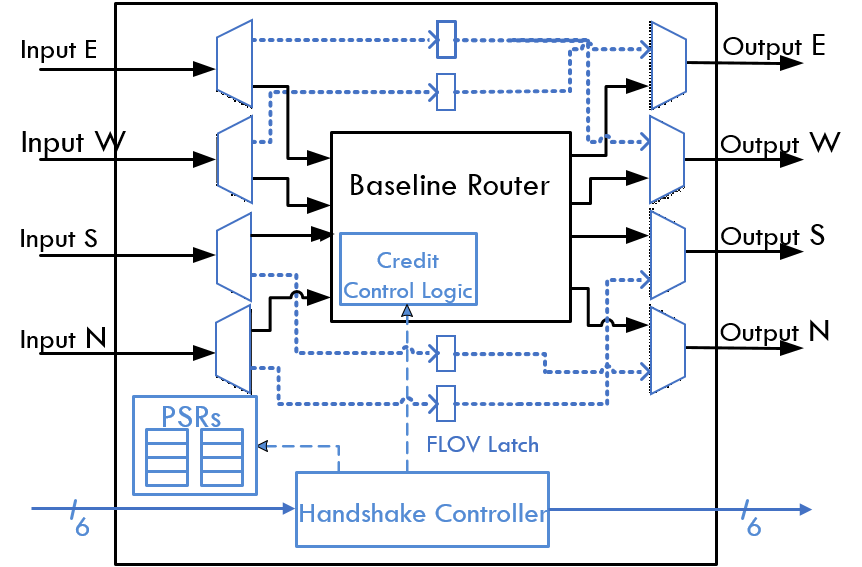
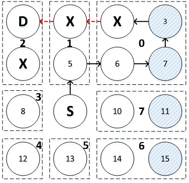
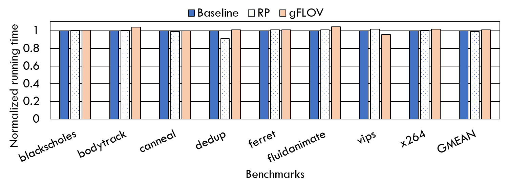
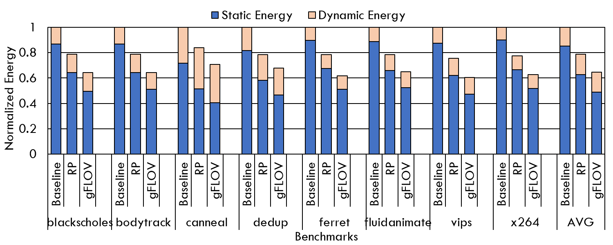
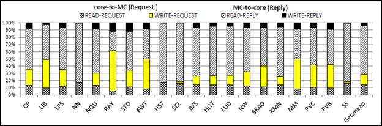
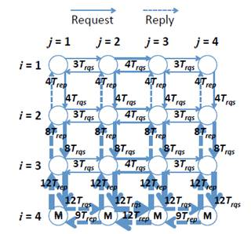
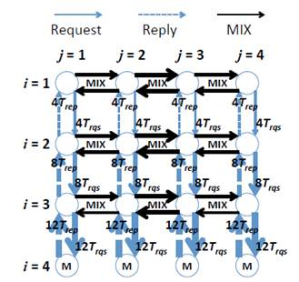

|
High
Performance On-Chip Interconnects Design for Multicore Accelerators
High
Performance Computing Laboratory
Approximate Network-on-Chip Architectures
|
Approximate
Computing has emerged as an attractive alternate compute paradigm by
trading off computation accuracy for benefits in both performance and
energy efficiency. Approximate techniques rely on the ability of
applications and systems to tolerate imprecision/loss of quality in the
computation results. Many emerging applications in machine learning,
image/video processing and pattern recognition have already employed
approximation to achieve better performance. A significant portion of
research on approximate hardware has focused on either computation
units for accelerated inaccurate execution, or memory hierarchy for
high performance memory. However, there has been no prior research on
approximate communication for the interconnection fabric of manycore systems.
Networks-on-Chip (NoCs) have emerged as the
most competent communication fabric to connect an ever increasing
number of processing/memory elements. Communication-centric
applications such as image/video processing and emerging memory intensivie big-data workloads place a significant
amount of stress on the NoC for high
throughput. Hence, designing a high-performance NoC
to provide high throughput has become critical to overall system
performance. Therefore, the need to explore hardware approximation techiques that can leverage the modern approximate
computing paradigm for high-throughput NoCs
is imminent.
In this work we propose APPROX-NoC, a data
approximation framework for NoCs to alleviate
the impact of heavy data communication stress by leveraging the error
tolerance of applications. APPROX-NoC
proposes to reduce the transmission of approximately similar data in
the NoC by delivering approximated versions
of precise data to improve the data locality for higher compression
rate. We design a data-type aware value approximation engine (VAXX),
with a light weight error margin compute logic, which can be used in
the manner of plug and play module for any underlying NoC data
compression mechanisms. VAXX approximates the value of a given data
block to the closest compressible data pattern based on the data type,
with fast quantitative error margin calculation, thereby improve
network throughput.
 APPROX-NOC Main Idea and Architecture
Overview

Approximate Value Compute Logic
|
Power-Gating for Energy-Efficient Networks-on-Chip
Chip Multiprocessors (CMPs) are scaling to 100s and 1000s cores
owing to shrinking transistor sizes and denser on-chip packaging as
stated by Moore’s law. However, the failure of Dennard Scaling, supply
voltage not scaling down with the transistor size, exposes high risks to
break the power and thermal constraints to keep all on-chip components
switching simultaneously. The future CMP designs will have to work under
stricter power envelops. Scalable Networks-on-Chip (NoCs),
like 2D meshes, have become de
facto interconnection mechanism in large scale CMPs. Recent studies
have shown that NoCs consume a significant
portion of the total on-chip power budget, ranging from 10% to 36%.
Hence, power-efficient NoCs designs are of the
highest priority for power-constrained future CMPs.
Static power consumption of the on-chip circuitry is increasing at
an alarming rate with the chip circuitry is increasing at an alarming
rate with the scaling down of feature sizes and chip operating voltages
towards near threshold levels. As we reach towards sub-10nm feature
sizes, static power will become the major portion of the NoC power consumption. Power-gating, cutting off
supply current to idle chip components, is an effective technique that
can be used to mitigate the worsening impact of on-chip static power
consumption. However, applying power-gating for NoCs
may disconnect the network and lead to performance degradation.
We propose Fly-Over (FLOV), a light-weight distributed power-gating
mechanism for energy-efficient NoCs. FLOV tries
to power-gate idle routers in a distributed manner through handshake
protocols. FLOV routers provides FLOV links for packets to fly-over gated
routers with a dynamic best-effort shortest routing algorithm in order to
facilitate network functionalities and sustain performance.
 
FLOV
Router Architecture
FLOV Routing Example

Application Execution Time for PARSEC Benchmarks

Application Energy Consumption for PARSEC Benchmarks
Bandwidth Efficient On-Chip Interconnect Designs
|
GPGPUs
are characterized by numerous programmable computational cores which
allow for thousands of simultaneous active threads to execute in
parallel. The advent of parallel programming models, such as CUDA and OpenCL, makes it easier to program
graphics/non-graphics applications, making GPGPUs an excellent
computing platform. The growing quantity of parallelism and the fast
scaling of GPGPUs have fueled an increasing demand for
performance-efficient on-chip fabrics finely tuned for GPGPU cores and
memory systems.
Ideal interconnects should minimize message blocking by efficiently
exploiting limited network resources such as virtual channels (VCs) and
physical channels (PCs) while ensuring deadlock freedom. Switch-based
Networks-on-Chip (NoCs) have been useful in manycore chip-multiprocessor (CMP) environments for
their scalability and flexibility. Unlike CMP systems where NoC traffic tends to be uniformly divided up across
cores communicating with distributed on-chip caches, the communication
in GPGPUs is highly asymmetric, mainly between many compute cores and a
few memory controllers (MCs) on a chip. Thus the MCs often become hot
spots, leading to skewed usage of significant portions of the NoC resources such as wires and buffers.
Specifically, heavy reply traffic from MCs to cores potentially causes
a network bottleneck, degrading the overall system performance.
Therefore when we design a bandwidth-efficient NoC,
the asymmetry of its on-chip traffic must be considered.
The
throughput-effectiveness is a crucial metric for improving the overall
performance in throughput-oriented architectures, thus designing a high
bandwidth NoC in GPGPUs is of primary
importance. Thus, to achieve such a goal, we quantitatively analyze the
impact of network traffic patterns in GPGPUs with different MC
placements and dimension order routing algorithms. Then, motivated by
the detailed analysis, we propose VC monopolizing and partitioning
schemes which dramatically improve NoC
resource utilization without causing protocol deadlocks. We also
investigate the impact of different routing algorithms under diverse MC
placements.

|
|
Packet Type
Distribution for GPGPU Benchmarks
|


Network traffic examples with XY and XY-YX routing
Publications
- Approx-NoC: A Data Approximation Framework for
Network-On-Chip Architectures,
R. Boyapati,
J. Huang, P. Majumdar, K. H. Yum and E. J.
Kim,
The 44th International
Symposium on Computer Architecture (ISCA), June, 2017
- Fly-Over: A Light-Weight Distributed Power-Gating
Mechanism for Energy-Efficient Networks-on-Chip,
R. Boyapati*,
J. Huang*, N. Wang, K. H. Kim, K. H. Yum and E. J. Kim,
The 31st IEEE
International Parallel & Distributed Processing Symposium
(IPDPS), June, 2017
- Bandwidth Efficient On-Chip Interconnect Designs
for GPGPUs,
H. Jang, J. Kim, P.
Gratz, K. H. Yum, and E. J. Kim,
The 52nd Design
Automation Conference (DAC), June 2015
|